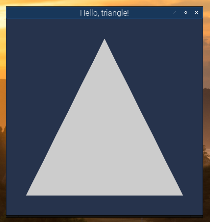

Introduction to OpenGL ES 3 on the Raspberry Pi
Lesson 2
Now that you know how to create a simple SDL window, we show you how to create your first OpenGL ES program. This will simply draw a triangle - the OpenGL equivalent of a Hello, World! program, called not surprisingly, Hello, triangle!.
Once again, if you have not already done so, get the code from here. Navigate to the Lesson-2 sub-folder and run the make file to compile and link the source files :
cd Lesson-2
make
./lesson-2
When you run the lesson-2 program you should see your first OpenGL ES 3 program:
In this initial commit, I am going to omit any explanation of how the code works. TO DO: write a proper explanation of how the code works.